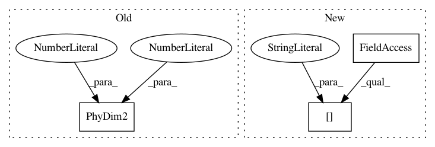

06c10924843cc8083f7b7acab4124210ad9426a1,nn_dataflow/tests/unit_test/test_resource.py,TestResource,test_src_data_region,#TestResource#,333
Before Change
""" Accessor src_data_region. """
nr1 = NodeRegion(dim=PhyDim2(2, 1), origin=PhyDim2(0, 0),
type=NodeRegion.DATA)
nr2 = NodeRegion(dim=PhyDim2(2, 1), origin=PhyDim2(0, 1),
type=NodeRegion.DATA)
resource = Resource(proc_region=NodeRegion(dim=PhyDim2(4, 4),
origin=PhyDim2(0, 0),
After Change
self.data_regions[0],
"src_data_region")
resource = Resource(proc_region=self.proc_region,
data_regions=self.data_regions[:1],
dim_array=PhyDim2(16, 16),
size_gbuf=131072,
size_regf=512,
In pattern: SUPERPATTERN
Frequency: 3
Non-data size: 3
Instances
Project Name: stanford-mast/nn_dataflow
Commit Name: 06c10924843cc8083f7b7acab4124210ad9426a1
Time: 2018-07-10
Author: mgao12@stanford.edu
File Name: nn_dataflow/tests/unit_test/test_resource.py
Class Name: TestResource
Method Name: test_src_data_region
Project Name: stanford-mast/nn_dataflow
Commit Name: 06c10924843cc8083f7b7acab4124210ad9426a1
Time: 2018-07-10
Author: mgao12@stanford.edu
File Name: nn_dataflow/tests/unit_test/test_resource.py
Class Name: TestResource
Method Name: test_dst_data_region
Project Name: stanford-mast/nn_dataflow
Commit Name: e775d7b952188ac451f97d7a876e94ff6cb80235
Time: 2018-07-10
Author: mgao12@stanford.edu
File Name: nn_dataflow/tests/dataflow_test/test_scheduling.py
Class Name: TestScheduling
Method Name: test_schedule_search_ilayout